Sistema POS, es un sistema creado para facilitar la administración de un negocio dedicado a la venta de bebidas, comidas, y cualquier otro producto de consumo al cliente. Especialmente creado para un Restaurante
y Bar pero puede adaptarse a cualquier tipo de negocio que ofrezca servicios de comida rápida para (clientes) que consumen en su local o incluso si tienen servicio par a llevar.
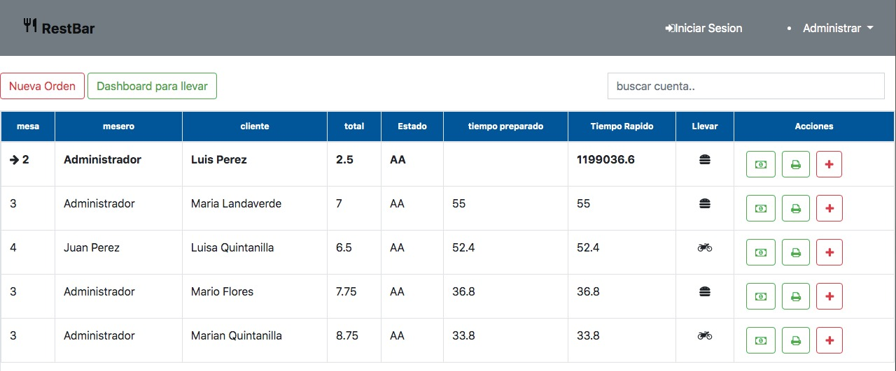
Características: Sistema POS RESTBAR
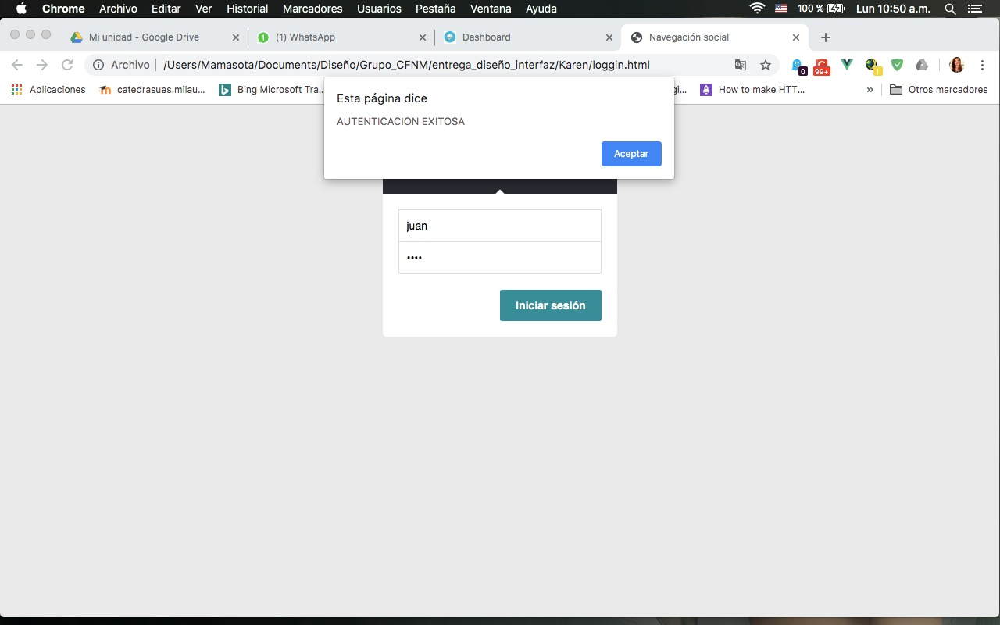
Logueo de Usuarios
El sistema muestra la pantalla principal para el logueo de usuarios para poder acceder al sistema lo cual brinda una seguridad al administrador ya que solo el tendra acceso al sistema.
Nos muestra la pantalla del Dashboard principal de todas las ordenes activas entre las opciones que esta pantalla nos ofrece esta, la de crear orden, ampliar orden, modificar orden, cobrar orden imprimir ticket.
Permite crear una nueva orden, donde se nos muestra tres pasos donde el paso 1 es datos generales de la orden,paso 2 agregar productos a la orden y paso 3 muestra un detalle de la orden
Tenemos la opcion de agregar mas productos a la orden la pantalla sera muy similar a la de agregar orden solo que en esta no abra el ingreso de datos generales ya que es una orden existente.
Podemos modificar ordenes pero solo permite quitar o aumentar cantidad de productos, si se quiere agregar nuevos productos a la orden se debe realizar desde agregar mas productos a la orden.
MySQL es un sistema de gestión de bases de datos relacional desarrollado bajo licencia dual:
Licencia pública general/Licencia comercial por Oracle Corporation y está considerada como la base de datos
de código abierto más popular del mundo, y una de las más populares en general junto a Oracle y Microsoft SQL Server,
sobre todo para entornos de desarrollo web.
MySQL es una base de datos muy rápida en la lectura cuando utiliza el motor no transaccional MyISAM, pero puede
provocar problemas de integridad en entornos de alta concurrencia en la modificación. En aplicaciones web hay baja
concurrencia en la modificación de datos y en cambio el entorno es intensivo en lectura de datos, lo que hace a MySQL
ideal para este tipo de aplicaciones. Sea cual sea el entorno en el que va a utilizar MySQL, es importante monitorizar
de antemano el rendimiento para detectar y corregir errores tanto de SQL como de programación.
2. Instalaremos Node.js
Node.js es un entorno en tiempo de ejecución multiplataforma, de código abierto, para la capa del servidor (pero no limitándose a ello)
basado en el lenguaje de programación ECMAScript, asíncrono,
con I/O de datos en una arquitectura orientada a eventos y basado en el motor V8 de Google. Fue creado con el enfoque de ser útil en
la creación de programas de red altamente escalables, como por ejemplo, servidores web.
3. Instalaremos Loopback 3
LoopBack es un framework para Node.js altamente extensible y de código abierto que te permite:
Cree API REST dinámicas, con poco o ningún codigo.
El soporte para base datos es bastante amplio, podemos trabajar con
Oracle
MySQL
PostgreSQL
MS SQL Server
MongoDB
Incorporar relaciones de modelo y controles de acceso para API complejas.
Servicios integrados de inserción, geolocalización y archivos para aplicaciones móviles.
Crear fácilmente aplicaciones de cliente con Android, iOS y JavaScript SDK.
Es para poder utilizar los servicios de la base de datos.
4. Instalar la app ssfree.exe
Es para poder utilizar los servicios de node.
5. descargar Proyecto
Descargar el siguiente proyecto y descomprimirlo en el escritorio. Utilizar la aplicacion ssfree.exe y luego abrir cada archivo .sh y darle play para lenvantar los servicios de la aplicacion
luego abrir el navegador con la siguiente direccion url: " http://localhost:3000/dashboardprincipal.html " lo mas importante es que si quieren tener activo su sistema no deben apagar el servidor ssfree.exe ni las consolas de GitHub para que el sistema funcione correctamente.
Manual: Sistema POS RESTBAR
En esta sección se presenta un manual rapido de usuario con las principales
opciones para el uso del sistema POS RESTBAR,
mostrando los pasos necesarios para realizar operaciones en el sistema.
Configuración de Productos
Esta opción del sistema nos permite la configuración o resgistro de los productos que estaran
disponibles en el negocio,
asi como tambien la edición y eliminación de estos.
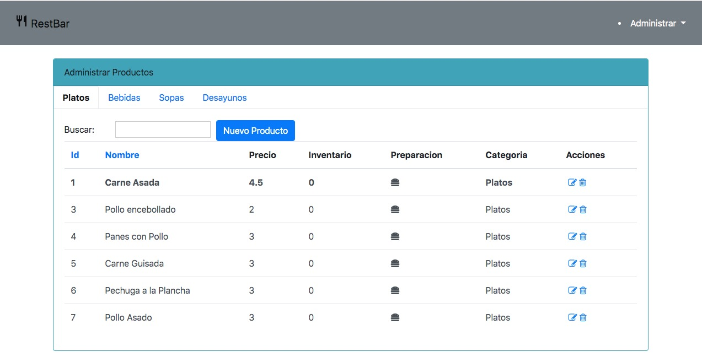
Pasos a seguir.
El Id del producto es autogenerico por lo que no se necesita asignarlo manualmente.
En el campo Nombre asignar el nombre del producto a registrar.
En el campo Precio se asigna el precio del producto a registrar.
Seleccionar una categoria adecuada disponible para el producto a registrar.
Dar click en el boton Guardar para que el producto sea guardado en la base de datos, el
producto
registrado se mostrara en la tabla de la derecha con los campos Id, Poducto, Precio y la
Categoria
a la cual pertenece.
Modificar Productos
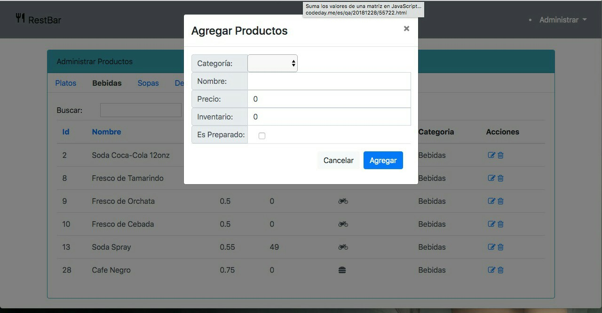
En este paso se debe seleccionar un producto de la tabla anterior y luego dar click en el
boton Editar
nos aparecera una ventana modal llamada modificar producto, esta ventana tendra todos los
campos cargados
con los datos correspondientes para poder ser modificados, para guardar cambios en caso que
se haya modificado
un campo dar click en el boton Guardar caso contrario click en Cancelar.
Para eliminar un producto o productos, seleccionarlos de la tabla donde se ven reflejados el
registro de estos
luego dar click en el boton eliminar.
Consola Principal
A continuación se describira las caracteristicas del dashboard principal y el dashboard para
llevar, estas son las pantallas
o vistas principales del sistema para interactuar con las ordenes solicitadas.
Dashboard Principal
Esta pantalla principal nos permite acceder a una serie de opciones que nos
permite la interaccion con el sistema para realizar porcesos
como: crear una orden, ampliar ordenes, modificar ordenes, cobrar ordenes, impresion de la
factura del cliente; proporciona tambien un
buscador de ordenes activas esto es util en caso que se tengan varias ordes acitivas listadas,
como se observa el sistema es capaz
medir el tiempo que ha transcurrido desde que se solicito la orden esto es importante por que
esto permite llevar el control del tiempo
de espera de los clientes de esta forma se busca brindar un mejor servicio.
Dashboard para Llevar
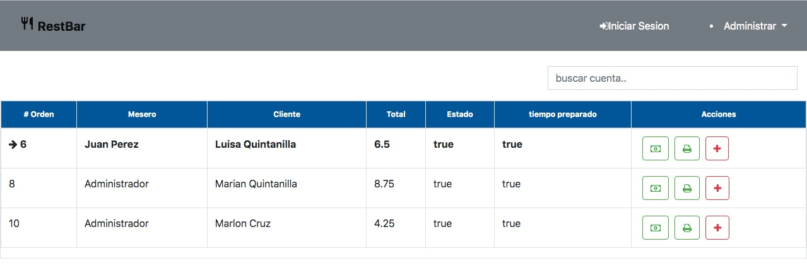
En esta pantalla se listan todas las ordenes que ha sido solicitadas por los
clientes, estas como tal son para llevar
lo que significa que no hay mesas en uso en este tipo de orden; de igual forma que el dashboard
principal esta nos
permite buscar ordenes para llevar en caso que se tengan varias de estas listadas y tambien nos
muestra el tiempo
que ha transcurrido desde que se solicito la orden.
Crear Orden
Esta opción del sistema nos permite la creacion de ordenes de una forma muy facil en la cual se muestra un modal con tres pasos para gregar datos generales,agregar productos y detalle orden para los
usuarios registrados.
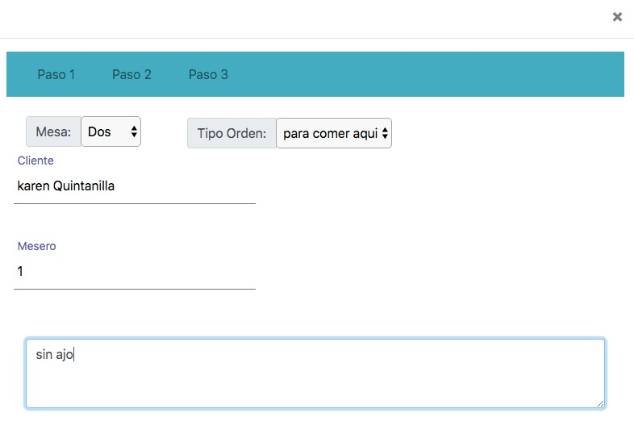
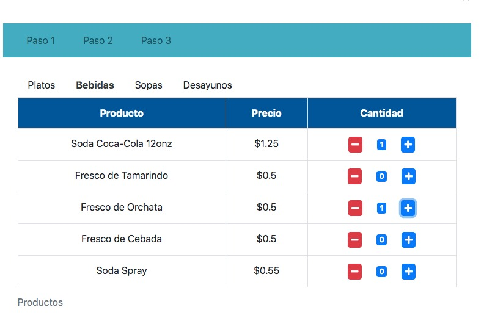
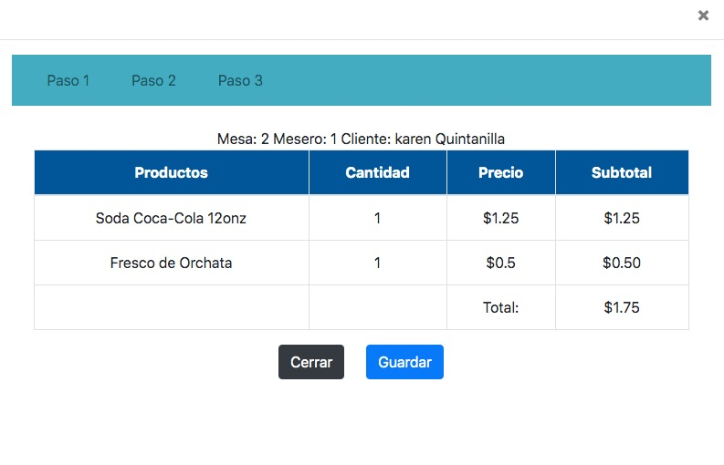
Pasos a seguir.
En el dashboard principal dar click en el boton Crear Orden, nos motrara la patalla Crear
Nueva Orden
El Id de la orden es autogenerico por lo que no se necesita asignarlo manualmente
En el campo Mesa seleccionar la mesa que el cliente eligio, la seleccion de esta depende del
tipo de orden solicitada
En el campo Cliente se asigna el nombre del cliente a atender
El campo Mesero se autocompleta con el registro que este hace a la hora de crear una orden
Seleccionar el tipo de orden a crear puede ser para comer o para llevar
Seleccionar de las categorias disponibles los productos que los clientes piden en sus
ordenes
En la tabla donde se listan los productos seleccionados se puede observar algunos campos que
describen a los productos
los campos disminuir y aumentar permiten quitar o agregar cantidad de un mismo producto
Para que la orden se procese dar click en el boton Guardar, seguidamente se mostrara una
ventana modal con el resumen de
la orden creada la cual detalla el numero de la orden, el mesero que atendio la orden, el
cliente, el producto, la cantidad, el
precio unitario y el subtotal de la orden
Para confirmar definitivamente la orden creada dar click en el boton GUardar, esta se
agregara a la vista de ordenes activas
Agregar productos a una orden
Esta opción del sistema nos permite agregar o ampliar una orden existente con nuevos productos
solicitados por los clientes
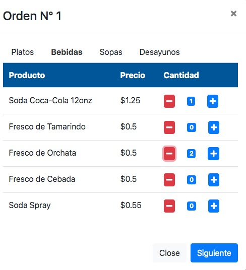
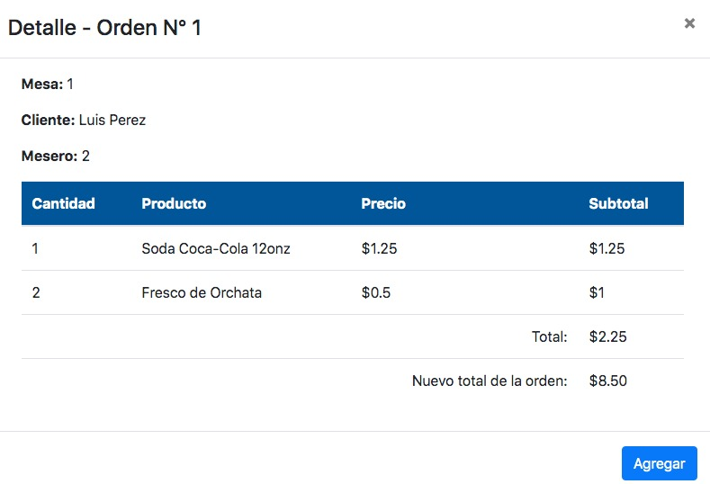
Pasos a seguir.
Para acceder a esta funcionalidad la orden debe ser seleccionada desde el dashboard
principal, luego dar clik en el boton
agregar mas productos a orden, nos cargara la pantalla Ampliar orden, los campos de los datos de la orden
aparacen ya llenos
Seleccionar de las categorias disponibles los nuevos productos a asignar a una orden ya
existente, de igual forma se puede
disminuir o aumentar cantidad de productos, permite visualizar el nuevo producto que se
agregara con su precio unitario
Para que la asignación de los nuevos productos se procesen dar click en el boton Aceptar,
seguidamente se mostrara una ventana modal con el resumen de
los nuevos productos asignados a la orden ya existente
Para confirmar definitivamente la asignación de los nuevos productos dar click en el boton
Agregar, estos productos se asignaran a la orden ya existente
Cobrar orden
Esta funcionalidad permite cobrar las ordenes que se realizaron
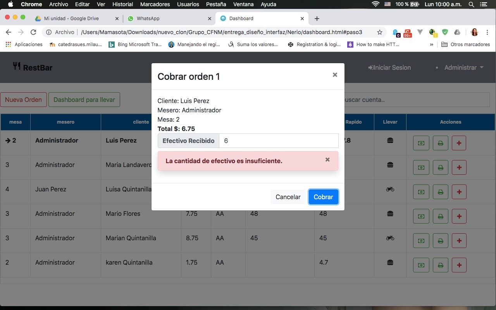
Pasos a seguir.
La orden que se desea cobrar se debe seleccionar desde el dashboard principal
Luego dar click en el boton Cobrar orden, nos mostrara una ventana modal llamada Cobrar
Orden, esta ventana muestra los
campos Orden, SubTotal de la orden, la propina, el efectivo que adquirimos de los clientes y
el campo cambio este muestra
el cambio que se le dara al cliente si existe tal cambio
Para que el cobro de la orden se confirme dar click en el boton Cobrar
Orden para Llevar
Esta funcionalidad se accede desde el dasboard principal la cual permite crear ordenes para comer
o llevar en este caso haremos enfasis en este tipo de orden
las ordenes para llevar se asigna al dashboard para llevar, es ahi donde se muestran todas las
ordenes creadas de este tipo
Pasos a seguir.
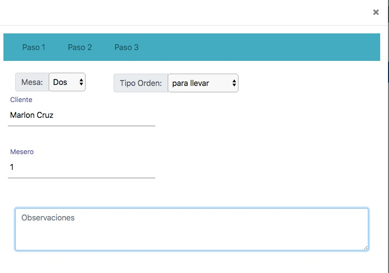
En el dashboard principal dar click en el boton Crear Orden, nos motrara la patalla Crear
Nueva Orden
El Id de la orden es autogenerico por lo que no se necesita asignarlo manualmente
En el campo mesa no se selecciona nada puesto que la orden es para llevar
En el campo Cliente se asigna el nombre del cliente a atender
El campo Mesero se autocompleta con el registro que este hace a la hora de crear una orden
Seleccionar el tipo de orden a crear en este caso para llevar
Seleccionar de las categorias disponibles los productos que los clientes piden en sus
ordenes En la tabla donde
se listan los productos seleccionados se puede observar algunos campos que describen a los
productos
los campos disminuir y aumentar permiten quitar o agregar cantidad de un mismo producto
Para que la orden se procese dar click en el boton Aceptar, seguidamente se mostrara una
ventana modal con el resumen de
la orden creada la cual detalla el numero de la orden, el mesero que atendio la orden, el
cliente, el producto, la cantidad, el
precio unitario y el subtotal de la orden
Para confirmar definitivamente la orden creada dar click en el boton Agregar, esta se
agregara a la vista de ordenes para llevar
Caso de Éxito: Sistema POS
Implementación del Sistema POS
Imagenes del Negocio donde se Implemento el sistema POS RESTBAR